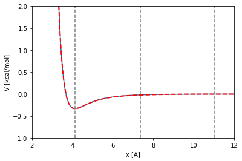

Molecular system
With OpenMM
import openmm as mm
import openmm.app as app
import openmm.unit as unit
import numpy as np
# Argon LJ parameters
mass_1 = 39.948*unit.amu
sigma_1 = 3.404*unit.angstroms
epsilon_1 = 0.238*unit.kilocalories_per_mole
# Xenon LJ parameters
mass_2 = 131.293*unit.amu
sigma_2 = 3.961*unit.angstroms
epsilon_2 = 0.459*unit.kilocalories_per_mole
# Reduced LJ parameters
reduced_sigma = 0.5*(sigma_1+sigma_2)
reduced_epsilon = np.sqrt(epsilon_1*epsilon_2)
# Box and initial coordinates
coordinates=[[0.0, 0.0, 0.0], [1.25, 0.0, 0.0]]*unit.nanometers
box=[[2.5, 0.0, 0.0], [0.0, 2.5, 0.0], [0.0, 0.0, 2.5]]*unit.nanometers
# Molecular Mechanics parameters
cutoff_distance = 3.0*reduced_sigma
switching_distance = 2.0*reduced_sigma
# OpenMM topology
topology = app.Topology()
Ar_element = app.Element.getBySymbol('Ar')
Xe_element = app.Element.getBySymbol('Xe')
chain = topology.addChain('A')
residue = topology.addResidue('Ar', chain)
atom = topology.addAtom(name='Ar', element= Ar_element, residue=residue)
residue = topology.addResidue('Xe', chain)
atom = topology.addAtom(name='Xe', element= Xe_element, residue=residue)
topology.setPeriodicBoxVectors(box[0], box[1], box[2])
# OpenMM system
system = mm.System()
non_bonded_force = mm.NonbondedForce()
non_bonded_force.setNonbondedMethod(mm.NonbondedForce.CutoffPeriodic)
non_bonded_force.setUseSwitchingFunction(True)
non_bonded_force.setCutoffDistance(cutoff_distance)
non_bonded_force.setSwitchingDistance(switching_distance)
system.addParticle(mass_1)
charge_1 = 0.0 * unit.elementary_charge
non_bonded_force.addParticle(charge_1, sigma_1, epsilon_1)
system.addParticle(mass_2)
charge_2 = 0.0 * unit.elementary_charge
non_bonded_force.addParticle(charge_2, sigma_2, epsilon_2)
system.setDefaultPeriodicBoxVectors(box[0], box[1], box[2])
_ = self.system.addForce(non_bonded_force)
With this library
This test system is fully documented in TwoLJParticles class API. Let’s see an example of how to interact with it:
import numpy as np
import matplotlib.pyplot as plt
from openmm import unit
---------------------------------------------------------------------------
ModuleNotFoundError Traceback (most recent call last)
/tmp/ipykernel_3488/1126906249.py in <module>
1 import numpy as np
----> 2 import matplotlib.pyplot as plt
3 from openmm import unit
ModuleNotFoundError: No module named 'matplotlib'
from uibcdf_systems import TwoLJParticles
coordinates=[[0.0, 0.0, 0.0], [1.25, 0.0, 0.0]]*unit.nanometers
box=[[2.5, 0.0, 0.0], [0.0, 2.5, 0.0], [0.0, 0.0, 2.5]]*unit.nanometers
# Particle 1 with Ar atom values
mass_1 = 39.948 * unit.amu
sigma_1 = 3.404 * unit.angstroms
epsilon_1 = 0.238 * unit.kilocalories_per_mole
# Particle 2 with Xe atom values
mass_2 = 131.293 * unit.amu
sigma_2 = 3.961 * unit.angstroms
epsilon_2 = 0.459 * unit.kilocalories_per_mole
molecular_system = TwoLJParticles(mass_1=mass_1, sigma_1=sigma_1, epsilon_1=epsilon_1,
mass_2=mass_2, sigma_2=sigma_2, epsilon_2=epsilon_2,
coordinates=coordinates, box=box)
molecular_system.parameters
{'mass_1': Quantity(value=39.948, unit=dalton),
'sigma_1': Quantity(value=3.404, unit=angstrom),
'epsilon_1': Quantity(value=0.238, unit=kilocalorie/mole),
'mass_2': Quantity(value=131.293, unit=dalton),
'sigma_2': Quantity(value=3.961, unit=angstrom),
'epsilon_2': Quantity(value=0.459, unit=kilocalorie/mole),
'box': Quantity(value=[[2.5, 0.0, 0.0], [0.0, 2.5, 0.0], [0.0, 0.0, 2.5]], unit=nanometer),
'cutoff_distance': Quantity(value=11.0475, unit=angstrom),
'switching_distance': Quantity(value=7.365, unit=angstrom)}
molecular_system.coordinates
Quantity(value=[[0.0, 0.0, 0.0], [1.25, 0.0, 0.0]], unit=nanometer)
molecular_system.box
Quantity(value=[[2.5, 0.0, 0.0], [0.0, 2.5, 0.0], [0.0, 0.0, 2.5]], unit=nanometer)
molecular_system.topology
<Topology; 1 chains, 2 residues, 2 atoms, 0 bonds>
molecular_system.system
<openmm.openmm.System; proxy of <Swig Object of type 'OpenMM::System *' at 0x7f2f589fc120> >
Let’s check that the molecular system behaves as it was predicted above with the reduced mass, sigma and epsilon constants.
from uibcdf_systems.tools import get_potential_energy
get_potential_energy(molecular_system)
Quantity(value=-0.011752073685139652, unit=kilojoule/mole)
coordinates = np.zeros([2,3], float) * unit.angstroms
xlim_figure = [2.0, 12.0]
ylim_figure = [-1.0, 2.0]
x = np.linspace(xlim_figure[0], xlim_figure[1], 100, True) * unit.angstrom
V = [] * unit.kilocalories_per_mole
for xi in x:
coordinates[1,0] = xi
potential_energy = get_potential_energy(molecular_system, coordinates=coordinates)
V.append(potential_energy)
def LJ (x, sigma, epsilon):
t = sigma/x
t6 = t**6
t12 = t6**2
return 4.0*epsilon*(t12-t6)
reduced_sigma = molecular_system.get_reduced_sigma()
reduced_epsilon = molecular_system.get_reduced_epsilon()
plt.plot(x, LJ(x, reduced_sigma, reduced_epsilon))
V._value = np.array(V._value)
plt.plot(x, V, linewidth=2, linestyle='--', color='red')
x_min = 2**(1/6)*reduced_sigma
plt.vlines(x_min._value, ylim_figure[0], ylim_figure[1], linestyles='dashed', color='gray')
coff = molecular_system.parameters['cutoff_distance']
plt.vlines(coff._value, ylim_figure[0], ylim_figure[1], linestyles='dashed', color='gray')
sdist = molecular_system.parameters['switching_distance']
plt.vlines(sdist._value, ylim_figure[0], ylim_figure[1], linestyles='dashed', color='gray')
plt.xlim(xlim_figure)
plt.ylim(ylim_figure)
plt.xlabel('x [{}]'.format(x.unit.get_symbol()))
plt.ylabel('V [{}]'.format(reduced_epsilon.unit.get_symbol()))
plt.show()

molecular_system.get_coordinates_minimum()
Quantity(value=4.133466492899267, unit=angstrom)
molecular_system.get_small_oscillations_time_period_around_minimum()
Quantity(value=1.4404534295370355, unit=picosecond)
As final tip, there’s a shortcut if the particules are real atoms such as argon and xenon. You don’t need to remember or look for their sigmas and epsilons:
molecular_system = TwoLJParticles(atom_1='Ar', atom_2='Xe', coordinates=coordinates, box=box)
molecular_system.parameters
{'mass_1': Quantity(value=39.948, unit=dalton),
'sigma_1': Quantity(value=3.404, unit=angstrom),
'epsilon_1': Quantity(value=0.238, unit=kilocalorie/mole),
'mass_2': Quantity(value=131.293, unit=dalton),
'sigma_2': Quantity(value=3.961, unit=angstrom),
'epsilon_2': Quantity(value=0.459, unit=kilocalorie/mole),
'box': Quantity(value=[[2.5, 0.0, 0.0], [0.0, 2.5, 0.0], [0.0, 0.0, 2.5]], unit=nanometer),
'cutoff_distance': Quantity(value=11.0475, unit=angstrom),
'switching_distance': Quantity(value=7.365, unit=angstrom)}
Sources
http://docs.openmm.org/6.3.0/userguide/theory.html#lennard-jones-interaction https://openmmtools.readthedocs.io/en/0.18.1/api/generated/openmmtools.testsystems.LennardJonesPair.html https://openmmtools.readthedocs.io/en/latest/api/generated/openmmtools.testsystems.LennardJonesFluid.html https://gpantel.github.io/computational-method/LJsimulation/